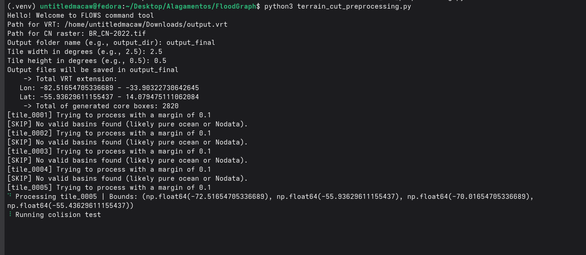
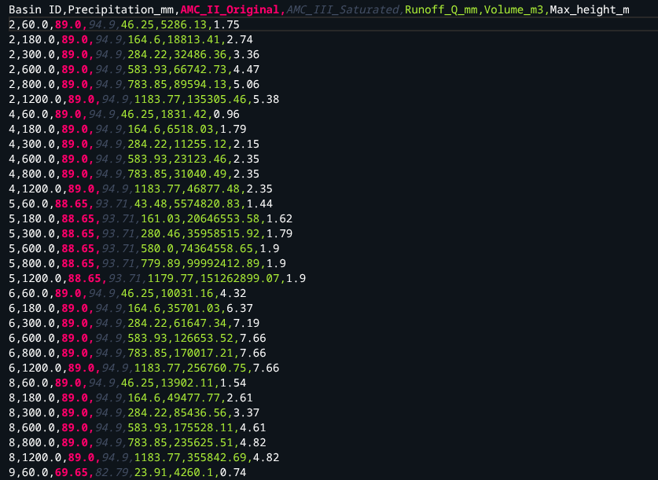
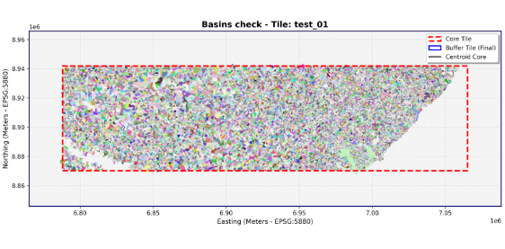

Flood Risk Likelihood from pre-compiled Watershed Analysis
A python tool for generating and evaluating flood-risk data without relying on constant hydrodynamic simulation and high-end hardware

About
Rather than dealing with complex hydrodynamic models, FLOWS analyses the terrain and finds bowl-like depressions - where water tends to accumulate in the terrain - and their contributing areas (where rainwater flows down until it gets trapped in a respective bowl-like depression) so it can analyses them.
How it works
- Area
- Water height for each rainfall and moisture scenarios
- Where that basin is in the map
- Rainfall infiltration data
See it in action
See the output of a single core box that was processed during testing
Command:
(.venv) python3 terrain_cut_preprocessing.py
Output:
[test_01] Trying to process with a margin of 0.1
[FAIL] 1 basin(s) leaked outside current buffer
[test_01] Trying to process with a margin of 0.2
[SUCESS] All interesting basins fit within a buffer of 0.2
-> Total area processed: 38796.10 km2
-> Mask applied!
-> Image stored as: diagnostic_test_01.png
-> Core basin vector stored as: core_basins_test_01.gpkg
-> Skipping basin 3: No valid CN data.
-> Exported worst-case volume table: all_basins_test_01_wcs.csv
Total elapsed time: 54m 59s


Current progress
Next steps are to:
- Compile the dataset to the entire Brazilian territory (in progress)
- Test on real life events (up next / being taken care of)
So far, this is dataset preprocessing current progress: